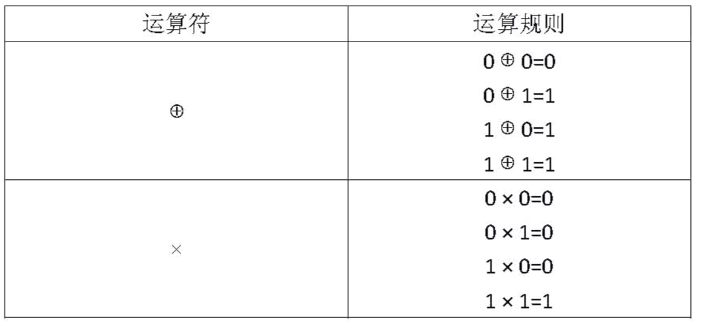

对于 $1$ 位二进制变量定义两种运算：

运算的优先级是：
先计算括号内的，再计算括号外的。
“×”运算优先于“⊕”运算，即计算表达式时，先计算×运算，再计算⊕运算。例如：计算表达式 $A⊕B×C$ 时，先计算 $B × C$，其结果再与 $A$ 做 $⊕$ 运算。
现给定一个未完成的表达式，例如 _+(_*_)，请你在横线处填入数字 $0$ 或者 $1$，请问有多少种填法可以使得表达式的值为 $0$。
第 $1$ 行为一个整数 $L$，表示给定的表达式中除去横线外的运算符和括号的个数。
第 $2$ 行为一个字符串包含 $L$ 个字符，其中只包含 '('、')'、'+'、'*' 这 $4$ 种字符，其中 '('、')' 是左右括号，'+'、'*'分别表示前面定义的运算符 “$⊕$” 和 “$×$” 。这行字符按顺序给出了给定表达式中除去变量外的运算符和括号。
包含一个整数，即所有的方案数。注意：这个数可能会很大，请输出方案数对10007取模后的结果。
4 +(*)
3
【样例说明】
给定的表达式包括横线字符之后为：_+(_*_)
在横线位置填入 (0 、0 、0) 、(0 、1 、0) 、(0 、0 、1) 时，表达式的值均为 $0$ ，所以共有 $3$ 种填法。
【数据范围】
对于 20% 的数据有 $0≤L≤10$。
对于 50% 的数据有 $0≤L≤1,000$。
对于 70% 的数据有 $0≤L≤10,000$。
对于 100% 的数据有 $0≤L≤100,000$。
对于 50% 的数据输入表达式中不含括号。
 Comet OJ
Comet OJ